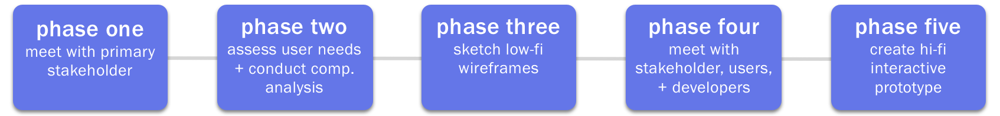

Integral Ad Science creates analytical tools that verify and optimize digital advertisements, which empowers clients (brands, advertisers, and publishers) to put their ads and money in the right places across various online channels.
MY ROLE
Research user needs
Create a comparative analysis
Wireframe key product features
Design a working hi-fi prototype
UX METHODS
Stakeholder Interviewing
Comparative Analysis
Information Architecture
Parallel Prototyping
Hi-fi wireframing
SOFTWARE
Sketch
Invision
Abstract
THE PROBLEM
All of the UX at IAS is for their proprietary platform, which is used daily by Client Service Managers (CSMs) and clients. Here, CSMs and clients can analyze and edit metrics regarding a particular advertising campaign. No user facing change log for CSMs or clients exists. CSMs, clients, and the IAS server are able to edit a variety of components on the IAS platform. Such edits can result in a change in ad campaign’s performance and metrics. Although changes in this information have always been captured at a log level, identifying what particular setting was changed from, and who made that change is arduous; no framework exists to record those changes in the UI.
THE SOLUTION
A fully integrated user-facing change log for every Admin page on IAS’s platform.
DESIGN PROCESS

PHASE ONE
The first step in this process was to meet with the product manager overseeing the change log. During our meeting, I asked a handful of questions to uncover key feature requirements. This allowed me to move on to the next phase: conducting a comparative analysis.
Stakeholder Interview Notes
PHASE TWO
After my initial stakeholder interview, I organized my notes so that I could understand the basic feature and user requirements. At this point in time, the change log needed to include the following:
Who made the change
A “from” state (to show what the change was)
A “to” state (to show what the change is)
When the change was made
NO restatement (changes cannot be reversed)
As I set out to conduct my comparative analysis, I looked for change logs that include the first four items in the bulleted list.
During the interview, the stakeholder mentioned that he admired the JIRA’s change log because of its readability. JIRA sparked my search. From there, I looked at its sister app, Confluence. I then researched interfaces that leverage a change log, and I considered what applications I interact with that use one, too. Below is a slide deck of my comparative analysis presentation. In my slide deck I highlight the purpose of each change log I analyzed, and list out the pros and cons to adapting something similar. The deck concludes with a list of things to consider in order to move forward.
PHASE THREE
I regularly checked in with the UX team to ensure that I was on the right track. At this point, I had gathered feature requirements, basic user needs, and design inspiration. Based off of these three things, I was given the go-ahead to start sketching. My primary focus in these sketches is how users would access the change log, and what the change log might look like. At this point, I thought it would be best for the change log to be displayed as a modal. I checked in with the stakeholder (since I did not have access to users at this time) to see what needs and requirements my sketches were and weren’t meeting. Once I got the clarification I needed, I created a high-fidelity mock-up of a modal-version of the change log.
Sample screen of change log as modal. Client names have been blurred out for privacy.
PHASE FOUR
Upon designing my high-fidelity mock-ups, I met again with the stakeholder, users, and developers. At this point in the design process, I was able to gather more user needs and uncover edge-cases from both the developer and user-end. This information influenced my final designs.
Collection of notes taken before passing off the designs
In the process of iterating another version of the change log, I learned that the project would not be developed until the next program increment (IAS follows a SAFe Agile project framework), after my internship. Given the extent of technical requirements (such a large overhaul of data onto our platform), more research was required from the developer end. I was advised by my superiors to complete designs that satisfied all the information I had gathered and to make notes for the rest of the UX team, as well as the developers so that my work could be implemented when the time came.
PHASE FIVE
Below is a functional prototype of my final designs. Sensitive client data has been blurred out for privacy.
MOVING FORWARD
Needless to say, I learned a lot about UX design this 9 week long project. Throughout my internship at IAS, I worked on a variety of smaller deliverables, but this large project was certainly my favorite because of the level of autonomy and ownership I had throughout the process.
As of January 2020, I received word that the change log was in the process of being developed and implemented on the platform.